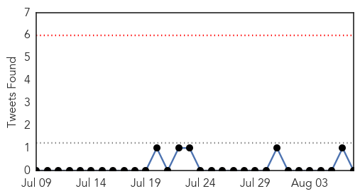

MERS
30-Day Web Trend
0 alerts, 0 warnings

30-Day Twitter Trend
0 alerts, 0 warnings

Article Locations

Article Confidences

Top Articles:
Top Tweets:
- 0.782
- EID: Association of Higher MERS-CoV Virus Load with Severe Disease and Death, Saudi Arabia, 2014 http://t.co/O1ZPYdBICR
- 0.659
- AFD Blog `Saudi MOH: 3 More MERS Cases In Riyadh' MERS-CoV http://t.co/SW0wuO4SeX
Unknown
30-Day Web Trend
0 alerts, 0 warnings
30-Day Twitter Trend
0 alerts, 0 warnings

Article Locations
Article Confidences
Top Articles:
- 0.996
- NY Legionnaires' Outbreak Adds to Already Rising US Cases
- 0.993
- Legionnaire's Disease Most Deadly for Frail, Elderly, Experts Say
- 0.993
- NY Legionnaires' Outbreak Adds to Already Rising US Cases
- 0.987
- Brunswick woman dies of Legionnaires' disease in Cleveland while New York grapples with outbreak
- 0.983
- Cleveland Woman Dies Of Legionnaires' Disease
- 0.978
- Officials order cooling tower inspections to battle deadly Legionnaires' outbreak in NYC
- 0.977
- Outbreak of Legionnaires’ disease causes concern across country
- 0.977
- Spitting armadillos blamed for Florida’s emerging leprosy problem
- 0.967
- African plague is rampant in the Baltics
- 0.966
- Legionnaires outbreak kills seven in New York
- 0.963
- New York cooling towers to be tested as Legionnaires' deaths hit 10
- 0.961
- Legionnaires' disease death confirmed in Ohio
- 0.961
- Legionnaires' disease death confirmed in Ohio
- 0.949
- The Statesman
- 0.945
- What caused the Legionnaires’ disease outbreak in NYC?
- 0.944
- NY to deploy teams to help Legionnaires' outbreak testing
- 0.942
- NY to deploy teams to help Legionnaires' outbreak testing
- 0.941
- Public Health Officials Investigate Human Plague Found in Child Camping in Yosemite National Park
- 0.940
- William P.J. Lynch Jr.comWilliam P.J. Lynch Jr.com
- 0.939
- Gold Coast schools gutted by flu and chickenpox outbreaks
- 0.923
- Bronx Dad Among 100 Sickened by Legionnaires' 'Can Barely Walk,' Plans to Sue: Lawyer
- 0.922
- New York to send teams to help Legionnaires' disease outbreak testing - Xinhua
- 0.920
- Deadly infections from medical scopes go unreported, raising health risks
- 0.917
- Chicago Tribune
- 0.917
- Chicago Tribune
- 0.917
- Chicago Tribune
- 0.917
- Chicago Tribune
- 0.917
- Chicago Tribune
- 0.915
- Ten dead in record NY Legionnaires' outbreak
- 0.914
- Ohio woman dies from Legionnaires' disease after 10th person passes away in NY
- 0.905
- Legionnaires’ disease death confirmed in Cleveland
- 0.904
- South Korea Issues Warning for Japanese Encephalitis
- 0.902
- At least 10 dead, 100 infected in New York's Legionnaires' outbreak
- 0.894
- Eight More Rila Residents Test Positive for Brucellosis, Bringing Number of Infected to 21
- 0.892
- Child diagnosed with plague after visiting Yosemite, Stanislaus National Forest
- 0.891
- Legionnaires' Outbreak: What We Know
- 0.886
- California Department of Public Health Investigates Human Plague Case
- 0.883
- WB Govt asks KMC to check water supply for contamination
- 0.878
- Albany County health official joins state talks on Legionnaires’ response
- 0.870
- Lack Of Cooperation Among Health Facilities Mars Antibiotic Resistance Fight, CDC Says
- 0.869
- CDC Team To Meet With Officials Over Bronx Legionnaires’ Outbreak « CBS New York
- 0.850
- Yosemite Officials Say 1,700 Visitors Risk Disease
- 0.836
- Child contracts plague while visiting Yosemite National Park — Nation — Bangor Daily News — BDN Maine
- 0.824
- Second Confirmed Death Over Plague in Colorado
- 0.808
- Lyme disease risk in the US is expanding in all directions
- 0.804
- Experts warn antibiotic misuse could lead ‘superbug’ to kill almost 40,000 in five years
- 0.803
- Governor Cuomo Announces Free Legionella Testing For Eligible Buildings Across New York State
- 0.801
- Health Officials: Child camping in Yosemite contracts plague
- 0.800
- Parents warned against complacency over spike in meningococcal cases in Victoria
- 0.779
- Rare cat virus not seen in 30 years
Showing top 50 articles...
Top Tweets:
- 0.742
- El clásico: no sé si fregar lo que hay en la trastera, o mudarme de apartamento.
- 0.550
- Hace un tiempo descubrí que me puedo rodear de ideas o de personas, pero nunca de ambos a la vez. La soledad tiene un poder especial.
- 0.515
- FluFactFriday: 164-173M doses of flu vaccine will be available in the U.S for the 2015-16 flu season. http://t.co/sL289JChXa